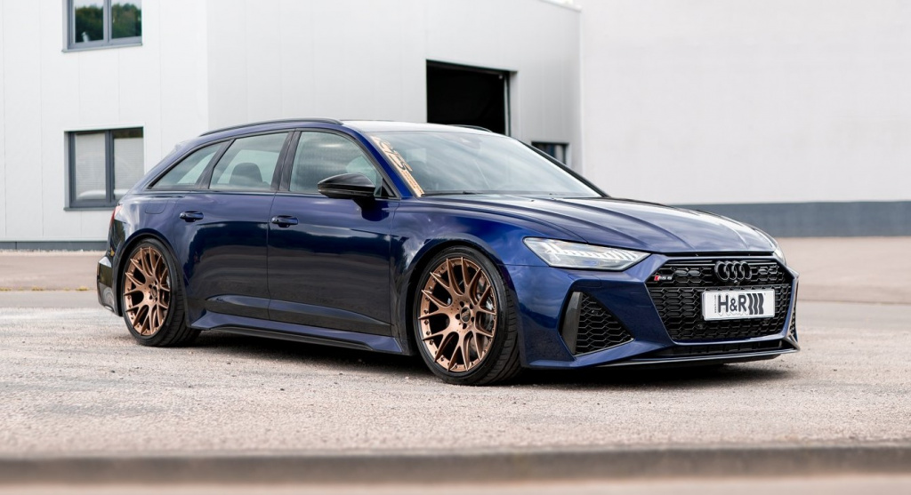

Audi RS6 — спортивный универсал, сочетающий практичность и невероятную динамику.
Audi RS6 — это высокопроизводительный универсал, сочетающий практичность большого автомобиля и динамику спортивной модели. Автомобиль оснащается мощным 4.0-литровым V8 двигателем с двойным турбонаддувом, который развивает около 600 лошадиных сил. Одной из ключевых особенностей модели является система полного привода quattro, обеспечивающая отличное сцепление с дорогой и стабильность на высоких скоростях. Несмотря на вместительный кузов универсала, автомобиль способен разгоняться до 100 км/ч примерно за 3.6 секунды. Audi RS6 демонстрирует, как современные технологии позволяют совместить комфорт, практичность и впечатляющие динамические характеристики в одном автомобиле.